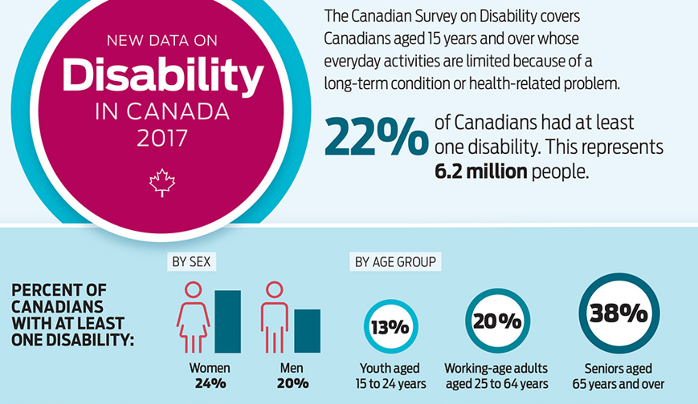

Accessibility Coaching Session Series
Find course reference here

What is this course?
This course is an introduction to accessibility (web / non-web), focusing on the ability to self-assess the compliance level of your asset.
The time of completion for this course is .
What will I learn?
- All about acessibility;
- Context for disabilities in Canada;
- Overview of accessibility tools;
- Web Content Accessibility Guidelines;
- Self assessment checklists;
- Resources and contacting the ITAO.
Definitions
Web accessibility: The qualities that make a web experience available to the widest possible group of users independent of ability or disability.
Usability: The qualities that make a web experience intuitive and easy to use. A usable web design aligns with the purpose for which the web site was created.
Disability: A disability is any continuing condition that restricts everyday activities.
Disabilities in Canada
How prevalent are different types of disabilities?
| Disability Type | Percentage |
|---|---|
| Pain | 15% |
| Flexibility | 10% |
| Mobility | 10% |
| Mental/Psychological | 7% |
| Dexterity | 5% |
| Hearing | 5% |
| Vision | 5% |
| Memory | 4% |
| Learning | 4% |
| Developmental | 1% |
Visual Disabilities
Visual disabilities:
1. Low Vision:
- Macular degeneration;
- Glaucoma;
- Diabetic retinopathy;
- Cataract;
Visual disabilities:
2. Colour Blindness:
- Protanopia (red deficiencies);
- Deuteranopia (green deficiencies);
- Tritanopia (blue deficiencies);
- Rod monochromacy (no colour);
Visual disabilities:
3. Blindness:
- Includes very little to no vision;
- Visual acuity is 20/200 or less in both eyes after correction;
- A visual field of 20 degrees or narrower;
Low Vision Tools
Take a look at this video on low vision tools.
Example of red-green colour-blindness


Auditory Disabilities
Auditory disabilities:
1. Mild:
- Sounds below 30 decibels;
- For people with mild hearing loss, speech can be difficult to understand, especially if background noises are present.
Auditory disabilities:
2. Moderate:
- Sounds below 50 decibels;
- For people with moderate hearing loss, a hearing aid may be required.
Auditory disabilities:
3. Severe:
- Sounds below 80 decibels;
- For people with severe hearing or profound loss, communication may be done through sign language; others rely on lip-reading techniques.
Auditory disabilities:
4. Profound:
- Sounds below 95 decibels;
- Any sound in some cases.
Motor-skill Disabilities
Motor-skill disabilities:
Traumatic injuries:
- Spinal cord injury;
- Loss or permanent damage to limb(s).
Motor-skill disabilities:
Diseases & Cognitive Conditions:
- Cerebral palsy;
- Muscular dystrophy;
- Multiple sclerosis;
- Spina bifida;
- ALS (Lou Gehrig’s Disease);
- Arthritis;
- Parkinson’s disease.
Cognitive Disabilities
Cognitive Disabilities
By far is cognitive disabilities. Cognitive disabilities can arise as a result of congenital conditions that are with an individual from birth, or developmental conditions that are with a person from a young age. They can also result from traumatic injury, infections, chemical imbalances, or other conditions later in life.
Cognitive Disabilities
In simple terms, a person who has a cognitive disability has trouble performing mental tasks that the average person would be able to do.
This category includes:
- Intellectual disability;
- Developmental delay and/or disability;
- Learning disabilities such as Dyslexia and ADHD.
Cognitive Disabilities for IT Consideration
Cognitive disabilities for IT consideration:
Limited Comprehension: Inability to understand complex ideas.
Low Tolerance for Cognitive Overload: Frustration when sensing difficult situations, or when there are too many things in their environment happening at the same time.
Limited Problem-Solving Skills: When presented with a problem to solve, some people with cognitive disabilities may simply be unable to solve it.
Short-Term Memory Loss: May have a hard time remembering things from one moment to the next. Inability to focus on new information, so they don't retain it in the short term.
Cognitive disabilities for IT consideration continued:
Attention Deficit: Some users experience attention deficits, making it hard for them to focus on the task at hand.
Difficulty Reading: Some users experience attention deficits, making it hard for them to focus on the task at hand.
Difficulty Understanding or Using Math: Some people experience math anxiety, which is an emotional or psychological fear that grips some people when confronted with math problems. This is less of an intellectual deficit than a psychological deficit.
Seizures: Seizures are abnormal or erratic electrical impulses in the brain that interfere with a person's ability to process information or, in some cases, control voluntary muscle movement.
Experiences of Students with Disabilities
Take a look at this video on the experiences of students with disabilities.
Assistive Technologies
For digital accessibility, Assistive Technologies are often broken down into two categories:
- Input devices: Input devices aid people when interacting with websites and applications.
- Output devices: Output devices aid people when presenting information from websites and applications.
Assistive Input & Output Devices
Input devices
Here are some examples of commonly used input devices:
- Accessible keyboards;
- Track pads;
- Head wands;
- Mouth pieces;
- Puffers;
- Switches;
- Touch screens;
- Eyetrackers;
- Voice activation software.
Take a look at this video about disabilities and technology work-arounds.
Output devices
Here are some examples of commonly used output devices:
- Magnifiers;
- Screen readers;
- Refreshable Braille Devices.
Context for Disabilities in Canada
Context - The Accessible Canada Act
The Accessible Canada Act (Act) came into effect July 11, 2019. This will benefit everyone in Canada, especially persons with disabilities, by helping to create a barrier-free Canada.
- Requires the government to create accessibility standards and regulations in priority areas: employment, built environment, procurement, transportation, communications, program and service design and delivery, information and communications technologies;
- Applies to sectors under federal jurisdiction.
Key Goals:
- Identify, remove and prevent barriers to accessibility;
- Bring leadership and cohesion to federal efforts to improve accessibility;
- Create more consistent experiences of accessibility across Canada.
Context - The Accessible Canada Act
Under the legislation, all federally-regulated organizations, including ESDC, will be required to:
- Prepare and publish an Accessibility Plan developed in consultation with persons with disabilities (first Plan to be published in 2022);
- Establish a process for receiving and addressing feedback from employees and clients;
- Report publicly on progress achieved
A transformational shift in addressing disability and accessibility barriers through a proactive approach.
Context – Accessibility Standards Canada (ASC) / Canadian Accessibility Standards Development Organization (CASDO)
- Technical committees will consult with experts in order to develop accessibility standards for people with disabilities. ASC will make recommendations to the minister responsible to adopt as regulations;
- Will conduct research on identifying and removing barriers, and disseminate information about best practices;
- Persons with disabilities will lead ASC. The aim is for the majority of board members to be Canadians with disabilities.
Context – The Public Service Accessibility Strategy
Treasury Board Secretariat (TBS) released the Public Service Accessibility Strategy in May 2019 to help federal departments meet the requirements of the Act.
Based on results from broad consultations with thousands of public servants and experts on how to make the Government of Canada the most accessible and inclusive public service in the world.
Strategy identifies 5 goals for action at the Government-wide level and at the Departmental level, along with specific measures of success to be achieved by 2021:
- Improving recruitment, retention, and promotion of persons with disabilities;
- Enhancing the accessibility of the built environment;
- Making information and communications technology (ICT) usable by all;
- Equipping public servants to design and deliver accessible programs and services;
- Building an accessibility-confident public service.
The Strategy provides guidance for departments to assess the state of accessibility in their organization, take early action in areas where immediate improvements can be made and set out a plan for achieving sustainable and tangible progress over time.
Information and Communication Technology (ICT)
Information and Communication Technology
Current State:
- 91% of ESDC internal applications do not meet accessibility standards;
- 88% of commercial-of-the-shelf products for staff do not meet accessibility standards;
- Average resolution time for an IT assistive technology request is currently 30 days;
- Some ICT processes already include Accessibility considerations;
- On flight ICT projects did not include Accessibility in the requirements;
- Well established assessment process for ICT accessibility in place;
- Central ICT intake process for Accessibility.
Information and Communication Technology
Desired State (proposed):
- ESDC employees and clients can access and use all ICT regardless of ability or disability;
- All IITB processes take into consideration accessibility, where applicable, from the start of projects to create inclusive environments.
Information and Communication Technology
Measures of success by 2025 (proposed):
- 100% IITB products acquired are accessible;
- 100% new IITB contracts have accessibility requirements as of 2020;
- Internal solutions (ITRDS, NWS) that meet accessibility standards increased to 25 % by 2021, 60% by 2022 and 100% by 2025;
- Off-the-shelf products (e.g. PeopleSoft) that are accessibility compliant increased to 25% by 2022, 50% by 2023 and 100% by 2025;
- 100 % of employees requiring an accessible workstation have one;
- ESDC employees with disabilities have improved access to pensions applications.
Guideline on Making Information Technology Usable by All
Guideline on Making Information Technology Usable by All
Leverage Harmonised European Standard, EN 301 549 (2018) when:
- Acquiring or developing internal-facing or public-facing IT solutions and equipment, including web content and all IT tools and equipment used by federal public servants;
- Considering accessibility in the lifecycle management process for existing IT solutions and equipment, including web content.
In alignment with the Harmonised European Standard, EN 301 549 (2018), departments, agencies and organizations are strongly encouraged to follow the latest version of the Web Content Accessibility Guidelines (WCAG) 2.1 AA (2018).
Guideline on Making Information Technology Usable by All
Departments, agencies and organizations are strongly encouraged to:
- Ensure that accessibility features are enabled for their IT solutions and equipment.
- Leverage enterprise tools and capacity to ensure that internal‑facing IT solutions and equipment are accessible for public servants;
- Work with the IT Accessibility Office (ESDC) to identify and deploy accessible tools and technology, and to remove remaining accessibility barriers associated with IT;
- Leverage their existing in-house accessibility programs when meeting Government of Canada accessibility requirements;
- Work in the open and use open‑source software to support others in efforts to develop accessible common IT systems across departments, agencies and organizations.
Accessibility Compliance Project
Accessibility Compliance Project
Current state analysis reveals 303 internal applications and over 500+ software products ( Commercial-off-the shelf, freeware, open source or other government commissioned products) in-scope for this project.
The mandate of the project is to render all applications/products accessible by 2025.
This project will model its strategy based on what was used for external client facing solutions by:
- Using an Incremental prioritized approach;
- Harmonizing accessibility changes with other planned enhancements to minimize costs and risks to operations;
- Utilizing a planned and phased approach to meet our goals.
Overview of Accessibility Tools
Overview of accessibility tools
- Colour Contrast Analyzer;
- WAVE Firefox / Chrome Extension;
- Complex Data Table Markup Toolbar;
- Firebug (deprecated) / F12 Developer Tools;
- HTML_CodeSniffer;
- Nordburg.ca;
- aXe Tesing from Deque;
- Bookmarklets from Digital A11Y;
- Compliance Deputy / Compliance Sheriff.
Four Principles of Accessibility (POUR)
Four principles of accessibility:
Perceivable:
Operable:
Understandable:
Robust:
Perceivable
Available through sight, hearing, or touch.
Operable
Compatible with keyboards.
Understandable
User-friendly, easy to comprehend.
Robust
Follows standards and works across all browsers, assistive technologies, and mobile devices.
Is the Web Page Perceivable?
Is the web page perceivable?
Information and user interface components must be presentable to users in ways they can perceive.
Here is a short checklist to help verify basic perceivability:
- Do images have alternative text?
- Is the tab order and read order logical and intuitive?
- Have you avoided using visual characteristics to communicate information (e.g., “click the circle on the right” or “required fields are in red”)?
- Does the interface have sufficient contrast between text color and background color?
- Does the content scale well when text is enlarged up to 200 percent?
Is the Web Page Operable?
Is the web page operable?
User interface components and navigation must be operable.
Here is a short checklist to help verify basic operability:
- Can all menus, links, buttons, and other controls be operated by a keyboard, to make them accessible to users who are unable to use a mouse?
- Does the web page include a visible focus indicator so that all users, especially those using a keyboard, can easily track their current position?
- Do features that scroll or update automatically (e.g., slideshows, carousels) have prominent accessible controls that enable users to pause or advance these feature on their own?
- Do pages that have time limits include mechanisms for adjusting those limits for users who need more time?
Is the Web Page Understandable?
Is the web page understandable?
Information and the operation of user interface must be understandable.
Here is a short checklist to help verify basic understandability:
- Can the language of the page, and any changes in language, be programmatically determined?
- Is there enough information related to interactive elements for all users to be able to successfully interact with the page (including error handling)?
- Do elements repeated across pages appear in the same relative order?
- Does the content follow the Canada.ca Content Style Guide?
Is the Web Page Robust?
Is the web page robust?
Content must be robust enough that it can be interpreted reliably by a wide variety of user agents, including assistive technologies.
Here is a short checklist to help verify basic robustness:
- Can users determine the roles, states, and properties of custom elements?
- Does the markup language use conform to the concept of being “well formed” according to its specification?
WCAG Conformance Requirements
WCAG Conformance Requirements
- Conformance level;
- Conform to level AA (includes all level A);
- Full pages;
- Complete processes;
- Only accessibility-supported ways of using technologies;
- Use technologies that can be relied upon;
- Non-interference;
Self Assessment Checklist
Self Assessment Checklist
- Web Standards Centre of Expertise:
- Accessibility Compliance Assessment:
The checklists cover approximately 70-80% of accessibility requirements that does not require an expert to verify.
Resources
Resources
IT Accessibility Office (ITAO):
- For 20 Years, under various banners, the IT Accessibility Office has been a provider for adaptive technology and advocate for inclusiveness of people with disabilities in the workplace. We are demonstrated leaders, committed to our accessibility mandate, continuing to provide support to employees with disabilities.
- Some of the services offered by the ITAO (full list available on iService):
- General Advice on an accessible ICT;
- Design Advice on an accessible ICT solution;
- Accessible Assessments on ICT solution;
- Document Review (Outlook, Word, Excel, PowerPoint, PDF);